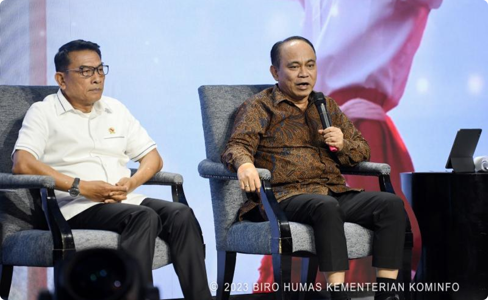

Menteri Budi Arie Kupas Tiga Aspek Utama Pembangunan Konektivitas
Digital
SIARAN PERS NO. 412/HM/KOMINFO/10/2023

Siaran Pers No. 412/HM/KOMINFO/10/2023
Selasa, 24 Oktober
2023
tentang
Menteri Budi Arie Kupas Tiga Aspek
Utama Pembangunan Konektivitas Digital
Pemerintah Republik Indonesia terus membangun infrastruktur teknologi
komunikasi dan informatika (TIK) atau digital sebagai Program
Strategis Nasional. Menteri Komunikasi dan Informatika Budi Arie
Setiadi menjelaskan pembangunan konektivitas digital berlandaskan pada
tiga aspek utama.
"Isu konektivitas itu ada tiga hal.
Pertama kapasitas, kedua coverage dan ketiga kualitas. Jadi yang
coverage itu mencakup berapa luasan wilayah yang sudah kita jangkau,"
jelasnya dalam dalam Dialog Forum Merdeka Barat 9 (FMB9) Peluncuran
Capaian Kinerja 2023, di Jakarta Pusat, Selasa (24/10/2023).
Menkominfo
menegaskan komitmen pembangunan infrastruktur digital yang masif untuk
mengejar ketertinggalan dari aspek penetrasi internet Indonesia yang
masih tertinggal dibanding negara lain."Karena terus terang penetrasi
internet di Indonesia baru 78%, berarti masih ada 22% warga negara
Indonesia yang belum memiliki akses internet," ujarnya.
Mengenai
isu kualitas, Menteri Budi Arie menilai kualitas dan kecepatan
internet juga masih menjadi pekerjaan besar bagi pemerintah.
Menurutnya, saat ini kecepatan internet 22 Mbps yang menempatkan
Indonesia urutan 9 dari 10 negara di Asia, termasuk di dunia dengan
peringkat ke 98."Ini pekerjaan rumah besar, kalau kita gak jadi negara
maju maka soal speed internet ini juga menjadi konsen kita. Kalau di
kota-kota mungkin sudah oke (kualitas dan kecepatan internet), tapi
kan di daerah-daerah rural terutama kabupaten masih banyak pekerjaan
rumah yang harus kita benahi," jelasnya.
Menkominfo
menekankan arti penting akselerasi transformasi digital dalam
pembangunan ekosistem digital di Indonesia. Bahkan, menurutnya
Kementerian Kominfo juga telah menyusun Roadmap atau Peta Jalan
Indonesia Digital dengan dasar empat pilar."Untuk semua hal yaitu
infrastruktur digitalnya, pemerintahan digitalnya, ekonomi digitalnya
dan yang terakhir adalah masyarakat digital. Empat pilar ini harus
semuanya jalan, kalau pemerintahannya sudah digital, ekonomi digital,
masyarakat digital dan infrastruktur digital," ungkapnya.
Dalam
sesi Diskusi FMB9 hadir Kepala Staf Kepresidenan Moeldoko dan Juru
Bicara Kementerian Luar Negeri Lalu Muhammad Iqbal. Adapun Menkominfo
Budi Arie didampingi Direktur Jenderal Informasi dan Komunikasi Publik
Usman Kansong dan Staf Khusus Menteri Kominfo Sugiarto.
Biro
Humas Kementerian Kominfo
e-mail: humas@mail.kominfo.go.id
Telp/Faks : 021-3504024
Twitter @kemkominfo
Twitter @kemkominfo
FB: @kemkominfo
IG: @kemenkominfo
website: www.kominfo.go.id
Hak Cipta © Kementrian Komunikasi dan Informatika RI
Profil / FAQ / Tautan / Peta Situs